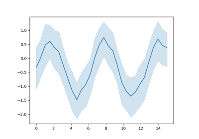
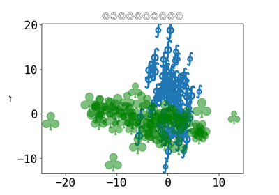
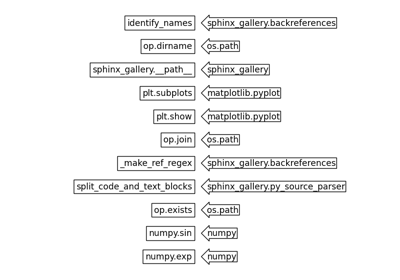
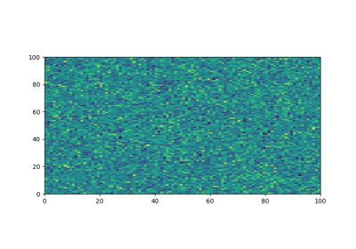
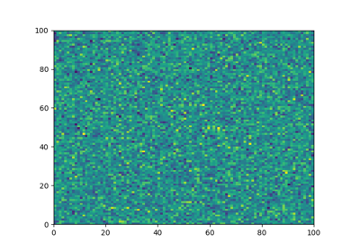

Basics Gallery with Matplotlib#
This page consists of the ‘Basics Gallery with matplotlib’ and a sub-gallery (aka subsection), ‘No image output examples’. This sub-gallery is generated from a sub-directory within the general examples directory. The file structure of this gallery looks like this:
examples/ # base 'Basics Gallery with Matplotlib' directory
├── GALLERY_HEADER.rst
├── <.py files>
└── no_output/ # generates the 'No image output examples' sub-gallery
├── GALLERY_HEADER.rst
└── <.py files>
General examples#
This gallery consists of introductory examples and examples demonstrating specific features of Sphinx-Gallery.


Plotting the exponential function
Plotting the exponential function

Seaborn example



Using Unicode everywhere ü§ó

Identifying function names in a script
Identifying function names in a script



Force plots to be displayed on separate lines
Force plots to be displayed on separate lines
No image output examples#
This section gathers examples which don’t produce any figures. Some examples only output to standard output, others demonstrate how Sphinx-Gallery handles examples with errors.



Example that fails to execute (with normal thumbnail behaviour)
Example that fails to execute (with normal thumbnail behaviour)